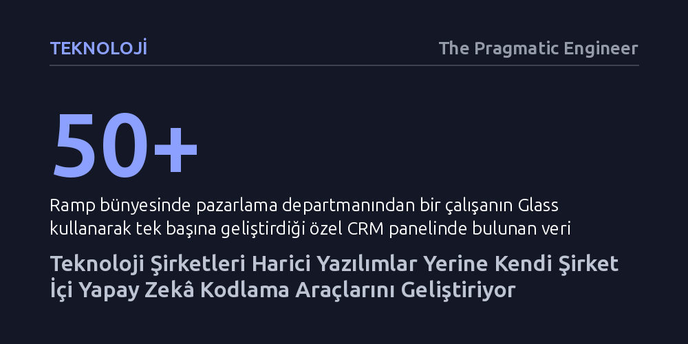

TEKNOLOJI · The Pragmatic Engineer · 2026-10-16
Büyük teknoloji şirketleri, üçüncü taraf yapay zekâ araçları satın almak yerine bir iki mühendisle kendi dahili prototipleme platformlarını inşa ediyor. Bu hamle şirket içi verileri güvende tutarken, mühendis olmayan çalışanların dakikalar içinde kendi iş araçlarını kodlamasını sağlıyor.
Yapay zekâ çağında kurumsal yazılım ihtiyacının hazır ürünler satın alarak değil, birkaç haftalık mühendislik yatırımıyla şirket içinde güvenli ve özel platformlar kurularak çok daha ucuza çözülebileceğini gösteriyor.

Teknoloji şirketlerinde son dönemde sessiz fakat köklü bir dönüşüm yaşanıyor. Eskiden pazarlama, satış veya insan kaynakları gibi teknik olmayan departmanlar şirket içi bir araca ya da basit bir veritabanı paneline ihtiyaç duyduğunda yazılım ekiplerinin sırasına girer ve aylarca beklemek zorunda kalırdı. Artık Stripe ve Ramp gibi silikon vadisinin öncü şirketlerinde bu tablo tamamen tersine dönmüş durumda. Çalışanlar, doğal dille çalışan yapay zekâ platformları sayesinde kendi özel iş araçlarını saatler içinde bizzat inşa ediyor.
Finans teknolojileri girişimi Ramp'in New York'taki genel merkezinde geliştirilen 'Glass' projesi bu eğilimin en somut örneklerinden biri. Şirketin pazarlama departmanında çalışan ve yazılımcı olmayan bir personel, ekranda 50'den fazla filtre ve veri alanı barındıran son derece karmaşık bir özel müşteri ilişkileri yönetim (CRM) panelini tek bir satır kod yazmadan bizzat üretti. Dışarıdan bakıldığında karmaşık görünen bu panel, üreticisi için günlük iş akışını olağanüstü hızlandıran vazgeçilmez bir araca dönüştü. Ramp, içeride geliştirdiği bu aracı daha sonra "bilginin katlanarak biriktiği bir yapay zekâ çalışma alanı" tanımıyla dış kullanıcıların erişimine açılan ticari bir ürüne dönüştürdü. Benzer şekilde Stripe da kendi bünyesinde 'Harbor' adını verdiği dahili prototipleme platformunu devreye alarak çalışanlarının hizmetine sundu.
Piyasada Lovable veya Replit gibi popüler yapay zekâ kodlama araçları varken şirketlerin neden kendi platformlarını kurduğu sorusu akla gelebilir. Bunun ilk sebebi şaşırtıcı derecede düşük maliyet ve mühendislik yatırımı. Stripe, Harbor platformunun ilk sürümünü tek bir mühendisle hayata geçirdi; Ramp ise Glass'ın ilk halini sadece iki mühendisle birkaç hafta içinde ayağa kaldırdı. Yüzlerce hatta binlerce yazılımcı istihdam eden büyük kurumlar için bu efor neredeyse göz ardı edilebilir düzeyde. Harici bir satıcıyla sözleşme imzalamak, güvenlik denetimlerinden geçmek ve fiyat pazarlığı yapmak çoğu zaman kendi aracını geliştirmekten daha fazla vakit ve enerji alıyor.
İkinci ve belki de en kritik gerekçe veri güvenliği. Bir şirketin müşteri kayıtları, finansal tabloları ya da operasyonel metrikleri gibi hassas iç veri kaynaklarını üçüncü taraf bir yapay zeka servisine açması çok büyük siber güvenlik ve yasal uyumluluk riskleri barındırır. Oysa şirket içinde barındırılan bir yapay zekâ altyapısında, iç veri tabanları güvenli sınırlar dahilinde tutularak modellere doğrudan bağlanabiliyor; böylece çalışanlar kurumsal verilerle anında entegre çalışan araçlar geliştirebiliyor.
Üçüncü avantaj ise şirketin kurumsal tasarım sistemine tam uyum sağlanması. Dışarıdan alınan hazır vibe-coding araçları genellikle jenerik arayüzler üretir ve bunları şirketin mevcut tasarım diline uydurmak ek uğraş gerektirir. Ramp ve Stripe gibi şirketler kendi iç araçlarını inşa ederken, üretilen tüm arayüzlerin kurumun resmi arayüz bileşen kütüphanesini kullanmasını şart koştu. Böylece teknik olmayan bir çalışanın ürettiği mini araç dahi şirketin resmi tasarım standartlarına kusursuz şekilde uyum sağlıyor.
Şirket içi yapay zekâ platformlarının başarısı yalnızca kod yazımını kolaylaştırmasından değil, kurum kültürünü dönüştürme gücünden kaynaklanıyor. Örneğin Ramp bünyesinde Glass kullanımı o kadar yaygın bir standart haline geldi ki, şirkete yeni katılan her personelin oryantasyon sürecine bu araçla basit bir uygulama geliştirme görevi dahil edildi. Kodlama geçmişi bulunmayan neredeyse her çalışan, günlük operasyonel tıkanıklıklarını yazılımcılara devretmek yerine kendi geliştirdiği mini otomasyon araçlarıyla çözüyor.
Bu trendin mühendislik ekipleri açısından da çok kritik bir kazanımı var: Şirket içi yapay zeka uzmanlığını doğrudan sahada inşa etmek. Sektörde üretken yapay zekâ altyapısı kurup işletebilen deneyimli mühendis bulmanın son derece zor ve maliyetli olduğu bir dönemdeyiz. Şirketler bu tür iç platformları birkaç haftalık projeler olarak kurguladıklarında, mevcut yazılımcılarına gerçek bir yapay zekâ altyapısı geliştirme, bunu kurumsal buluta entegre etme ve ölçekleme fırsatı sunmuş oluyor. Yani kurumlar dışarıdan hazır ürün kiralamak yerine, kendi mühendislerini geleceğin yapay zekâ mimarları olarak kurum içinde eğitiyor.
Kendi bulut altyapısında kodlama ajanı sistemleri işleten orta ve büyük ölçekli teknoloji şirketlerinin önümüzdeki dönemde Stripe ve Ramp'in açtığı yolu izlemesi kaçınılmaz görünüyor. Şirket içi vibe-coding araçları hem kullanıcı benimsemesi açısından üçüncü parti yazılımlardan katbekat yüksek performans gösteriyor hem de kurumsal verilerin dışarı sızmasını önlüyor.
Yazılım dünyasındaki bu dönüşüm, işe alım ve mülakat standartlarına da yansımaya başladı. Nitekim Meta ve Google gibi teknoloji devleri, mühendislik mülakat süreçlerine adayların yapay zekâ araçlarını kullanarak kod geliştirdiği özel aşamalar ekliyor. Kod yazmanın mekanik bir iş olmaktan çıkıp yönlendirici bir tasarım ve muhakeme sürecine evrildiği bu yeni çağda, şirketlerin kendi iç yapay zekâ fabrikalarını kurması geçici bir heves değil, kalıcı bir kurumsal yazılım stratejisi olarak öne çıkıyor.